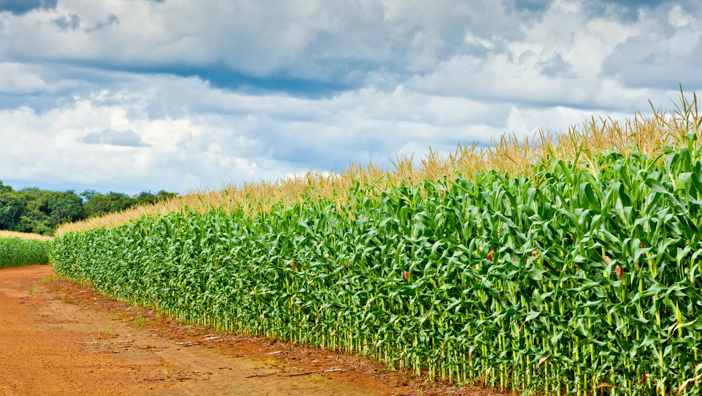

La agricultura es la actividad del cultivo de la tierra en la que pueden utilizarse distintas técnicas o métodos con la finalidad de sacar el máximo rendimiento a lo cultivado. Esta actividad es un método de vida y de alimentación, ya sea para el consumo propio o para la venta de los alimentos cultivados.
mas sobre la agriculturaMaíz para grano se cultiva normalmente con una distancia entre los surcos de 50 a 120cm. Surcos más cerradas deja que las plantas puedan aprovechar mejor la humedad, los nutrientes y la luz en una etapa más temprana por tener más espacio entre cada planta en el surco.
